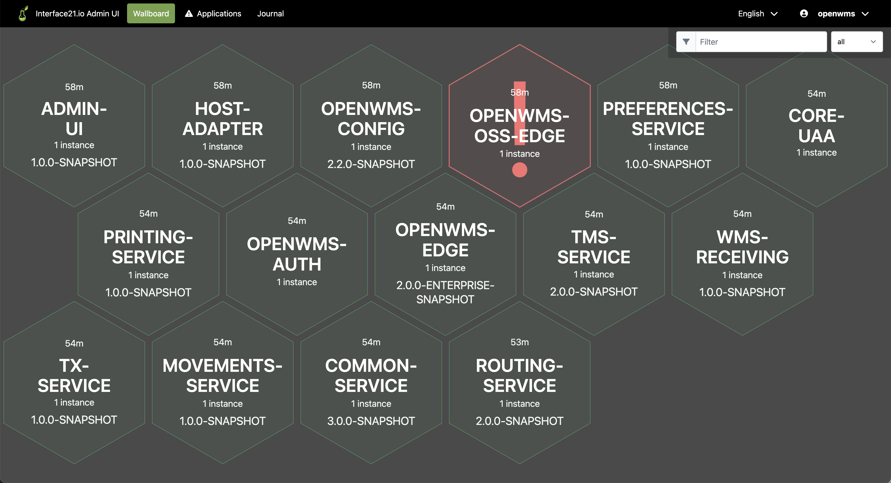

OpenWMS CORE Admin UI
This monitoring application is based on Spring Boot Admin Server and can be used to visualize the state of a distributed microservice application and monitor and control single services.
It is part of the OpenWMS.org CORE domain because it can also be used outside logistics projects and belongs to the technical infrastructure components of a typical microservice application built with Spring Boot.

The main purpose in production is to control the log level of single components and categories as well as controlling caches. Viewing the logs is done with a centralized log monitoring system.
Additional configuration parameter has been added or preset to the configuration parameters of Spring Boot Admin Server:
| Configuration parameter name | Default value | Description |
|---|---|---|
owms.admin.start-page |
/wallboard |
The existing wallboard page shall be the start page after login. Possible values ``, /application |
owms.eureka.url |
http://user:sa@localhost:8761 |
URI to connect to the discovery server |
owms.eureka.zone |
${owms.eureka.url}/eureka/ |
URI to get the zone settings from Eureka discovery server |
owms.srv.hostname |
localhost |
Hostname that is used to register the Admin UI at the discovery server |
owms.srv.protocol |
http |
Port that is used to register the Admin UI at the discovery server |
server.port |
${PORT:8155} |
Port where the Admin UI web server listening at |
Supported Spring profiles:
| Profile name | Description |
|---|---|
ELK |
All logs and traces are pushed to Logstash (via syslog) expected to listen on a server with hostname elk and port 5000 |